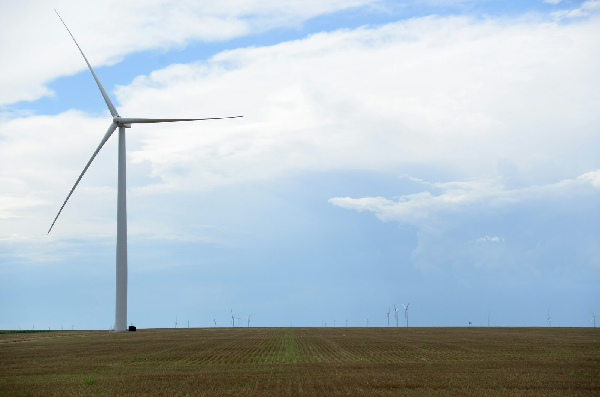

The Heartland Is Not Behind. It's Where the Next Systems Get Built.
On the geography of advantage.

The dominant story about innovation outside the coasts has been a story about overlooked talent and misplaced capital.
Steve Case — who lived and worked in Wichita, in new pizza marketing and product development at Pizza Hut headquarters, before he founded AOL — helped give that story a name. The Rise of the Rest. He was right. Talent has always been more widely distributed than venture capital.
But the AI era is exposing a deeper geography of advantage. The question is no longer only where entrepreneurs can raise capital. It is where the next systems can be built.
The Heartland is not just deserving of attention. It is structurally advantaged at the kind of work the next decade will rest on. Not only the production of unicorn startups, though some will come. The assembly of layered systems. Infrastructure, workforce, governance, partnership, trust. The work that converts an idea into operating capacity at scale.
That work is harder to do in the legacy tech hubs than the narrative admits. And it is easier to do in places like Wichita than the narrative has begun to notice.
This piece is about why.
The Rise of the Rest is the right story, and an incomplete one
What Case has built is real. Roughly three-quarters of US venture capital has flowed to California, New York, and Massachusetts. His road trips have moved capital that would not otherwise have moved. His Seed Fund has invested in companies across more than a hundred American cities. He has spent more than a decade making the case that talent is everywhere and capital is concentrated.
That story matters. It also has a particular shape.
The hero of the Rise of the Rest is the entrepreneur. The metric is investment. The victory condition is a successful exit. It is a venture-capital frame on a problem that is partly a venture-capital problem.
There is another, less-told story that the AI era is starting to force into view. The story of systems. Power, fiber, interconnection, regional workforce, university-anchored research, employer-coupled training pathways, public-private coordination, regulatory clarity, and the long-arc partnerships that link them. The systems story is harder to photograph than a founder pitch. It does not produce a single quotable exit. And it is the story the next decade is going to be built on.
If the Rise of the Rest is about where the talent is, the question worth asking next is about where the systems get built. The two stories are not in conflict. The first is necessary. The second is where the next decade will be decided.
AI has changed the geography of advantage
Software was light. AI is heavy.
Software could often scale as a lightweight layer on top of existing infrastructure. AI at scale is different. It depends on a heavier stack: power, compute, fiber, interconnection, cooling, secured facilities, data governance, trained operators, and a region's willingness to permit and host the infrastructure. Latency matters in ways it did not five years ago. Distance to compute matters. Regional workforce matters. Power capacity matters. The cost structure of operating physical infrastructure at scale matters.
The legacy tech hubs are at the wrong scale for some of this work. The same density that produced the Bay Area's network effect makes it nearly impossible to assemble new layered infrastructure there at speed. Land is expensive. Power is constrained. Permitting is slow. The institutional density that used to be an advantage now creates coordination friction that is difficult to overcome.
The Heartland has the inverse pattern. More available land. Lower cost structures. Expandable power systems in some regions. Real universities. Real industries. State governments that can move. And critically, an institutional fabric in which the layers can be assembled.
Note the word can. Structural advantage is not the same as automatic outcome. The Heartland's potential depends on whether the connective work actually gets done. But the precondition is in place, and it is in place in the middle of the country in a way it is not in the metros that defined the last technology cycle.
This is not a story about the coasts declining. The coasts will continue to lead headlines and venture flow for years. It is a story about the geography of advantage broadening — in a way the standard narrative has not yet caught up to.
Connection compounds at human scale
This is the part most easily misheard.
In Wichita on a Tuesday afternoon, it is possible to convene a university president, an aerospace L&D lead, a workforce board chair, a state Commerce official, a federal apprenticeship intermediary, an internet exchange builder, and the head of a regional foundation in the same room. They know each other. They have worked together before. The institutional distance between them is small enough that decisions can be made and then executed.
That same conversation is structurally difficult in New York or San Francisco. Not because anyone is uninterested. Because the scale, the sector clusters, the cost of coordination, and the sheer institutional density make convening across layers nearly impossible at speed. People who would say yes to the work struggle to find an afternoon together that turns it into something real.
This is not a romantic claim about smaller cities. It is an observation about how complex systems get assembled. The connective layer — the layer that decides whether any of it holds together — is easier to operate at human scale than at metropolitan scale. The Heartland often operates at human scale. That is not a moral virtue. It is a structural fact.
This is the move the Rise of the Rest narrative cannot quite make, because its lens is on the founder rather than on the system. The deepest advantage the middle of the country has is not lower rent or available talent. It is the social and institutional architecture that lets the layers connect.
Connection compounds. It compounds faster where the layers are close enough to touch.
The Heartland has been building systems all along
This is where Olive Ann Beech comes in.
She was born in Waverly, Kansas, in 1903. She was writing her family's checks by age eleven. She skipped high school for business college. She walked into a Wichita aviation startup at twenty-one and met Walter Beech — a brilliant barnstormer and aircraft designer. What followed was not a story of a woman behind a great man. Walter designed the airplanes. Olive Ann built the company that could finance, manufacture, sell, support, and scale them.
When Walter was hospitalized in 1940, she did not flinch. She secured $83 million in loans. She grew the workforce from hundreds to ten thousand. She delivered more than seven thousand aircraft that trained nearly every American bombardier and navigator in the Second World War, earning the company five Army-Navy "E" Awards. When Walter died in 1950, she became one of the first women in American history to lead a major US aerospace manufacturer — and Beech Aircraft would later appear on the Fortune 500. She ran Beech for three more decades: the King Air, NASA's Gemini program, the Wright Brothers Trophy, the National Aviation Hall of Fame.
She never left Wichita.
The point is not that the Heartland produces remarkable individuals, though it does. The point is structural. What Olive Ann built was a system. The financing layer. The supply chain layer. The workforce layer. The customer layer. The regulatory layer. The manufacturing layer. The training layer. All organized into something durable enough to survive a world war, three decades of leadership transitions, and outlast most of what the rest of the industry built in the same period.
Wichita is not alone. St. Louis, Northwest Arkansas, Tulsa, Des Moines, Omaha, Kansas City, and other Heartland regions have spent generations building industry-specific systems around agriculture, logistics, retail, energy, finance, manufacturing, healthcare, and civic philanthropy.
The pattern is the same. Decades of layered system-building. Industries that took generations to assemble. Institutional muscle for coordinating across sectors that the standard narrative has not begun to price in.
The AI era is not going to displace these systems. It is going to be deployed on top of them.
The new layer being added — and where it is being built now
The next infrastructure layer the AI economy needs is regional interconnection. It is also a layer the United States has been quietly, structurally short on for years.
Fourteen US states have no internet exchange point. The resulting gaps leave roughly thirty million Americans dependent on out-of-state interconnection to reach the rest of the internet, paying more for slower service and routing through distant hubs that compound latency at every hop. AI workloads running at scale will put increasing pressure on that pattern. Inference is moving to the edge. Latency thresholds are tightening. The places that can offer low-latency, neutral, regionally hosted interconnection will be better positioned to win workloads that depend on cost, speed, and proximity.
In May of 2025, Wichita State University, Connected Nation, and DE-CIX broke ground on the first carrier-neutral internet exchange point in Kansas, on the Innovation Campus. It is the first in a national blueprint to deploy 125 neutral, university-anchored IXPs across the United States. Letters of intent are already in from more than ten universities and municipalities to replicate the model.
The structural choice matters. The IXP sits on a university campus. The university is an anchor institution. The model is open, neutral, and public-minded: infrastructure designed to increase regional capacity rather than capture it. This is exactly the kind of infrastructure layer Olive Ann Beech would have recognized — not the product, but the system that lets every product be more.
The workforce layer is moving in parallel. Apprenti, a national Registered Apprenticeship intermediary in technology, has partnered with NC State's AI Academy to launch what NC State describes as the first nationwide registered AI Associate apprenticeship program in the U.S. to include national standards for AI. For Kansas and the surrounding Heartland, the Central Region build-out turns national AI apprenticeship policy into regional execution.
Federal workforce and AI policy signals are pointing in the same direction: regional systems, anchored by education and connected to employers. The DOL launched its AI in Registered Apprenticeship Innovation Portal in April 2026. The Department's AI Literacy Framework was released earlier the same year. Workforce Pell grants for short-term workforce programs become effective July 1, 2026.
This is what layered system-building looks like in real time.
Bottom line
The Rise of the Rest is the right story about where talent lives and where capital has failed to look. But the harder story, and the one the next decade will rest on, is about where systems get built.
AI does not run on enthusiasm. It runs on power, fiber, interconnection, workforce, governance, and the trust that lets the layers connect. The regions that can put those layers in one room are going to build the next thing.
A lot of those regions are in the middle of the country.
The Heartland is not behind. It is where the next systems get built — because the layers can actually be brought into the same room.
Olive Ann Beech understood this in 1940 when she financed, built, and scaled the system that trained the navigators who helped win a war. The people building the next layer of American digital infrastructure understand it now.
The work is the same shape. The product changes. The system is the point.
Building something that needs the layers connected?
MindScapes works with organizations and regions building at the intersection of infrastructure, workforce, and AI.